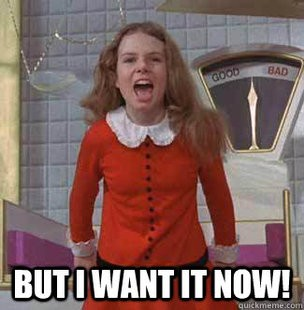
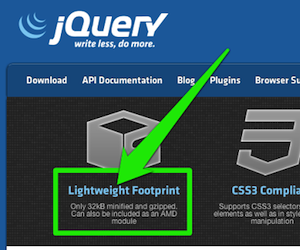
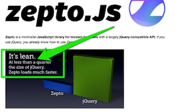

Please run this preso in Chrome Canary
Otherwise the demos might not work
Demo
<x-gangnam-style></x-gangnam-style>
Demo
<x-megabutton>Mega button</x-megabutton>
Defining Web Components
key players
<template>- Scaffold/Blueprint- inert chunks of clonable DOM
- Shadow DOM - Mortar/glue
- building blocks for encapsulation & boundaries inside of DOM
<element>(custom elements) - Toolbelt- create new HTML elements - expand HTML's existing vocabulary
- extend existing DOM objects with new imperative APIs
Templates
scaffold / blueprint
Templates...
not
a new concept
Oldschool templates
Method #1: "offscreen" DOM using [hidden] or display:none
<div id="mytemplate" hidden> <img src="logo.png"> <div class="comment"></div> </div>
- We're working directly w/ DOM.
- Resources are still loaded (e.g. that
<img>) - Style and theming is painful.
- embedding page must scope all its CSS to
#mytemplate. - no guarantees on future naming collisions.
- embedding page must scope all its CSS to
Oldschool templates
Method #2: manipulating markup as string. Overload <script>:
<script id="mytemplate" type="text/x-handlebars-template"> <img src="logo.png"> <div class="comment"></div> </script>
- encourages run-time string parsing (via
.innerHTML)- may include user-supplied data → XSS attacks.
Examples: handlebars.js, John Resig's micro-template script
Proper templating
<template>
Contains inert markup intended to be used later:
<template id="mytemplate"> <img src=""> <div class="comment"></div> </template>
- We're working directly w/ DOM again.
- Parsed, not rendered
<script>s don't run, images aren't loaded, media doesn't play, etc.
<template>
- Appending inert DOM to a node makes it go "live":
var t = document.querySelector('#mytemplate');
t.content.querySelector('img').src = 'http://...';
document.body.appendChild(t.content.cloneNode(true));
.content provides access to the <template>'s guts:
interface HTMLTemplateElement : HTMLElement {
attribute DocumentFragment content;
}
$$$
Shadow DOM
mortar / glue
Turns out...
Browser vendor's have been holding out on us!
- DOM nodes can already "host" hidden DOM.
- It can't be accessed traversing the DOM.
Shadow DOM
gives us encapsulation in the DOM and from JS
Encapsulation...
not
a new concept
Attaching Shadow DOM to a host

Shadow tree is rendered instead

Creating Shadow DOM
<div id="host"> <h1>My Title</h1> <h2>My Subtitle</h2> <div>...other content...</div> </div>
var host = document.querySelector('#host');
var shadow = host.createShadowRoot();
shadow.innerHTML = '<h2>Yo, you got replaced!</h2>' +
'<div>by my awesome content</div>';
// host.shadowRoot;
My Title
My Subtitle
...other content...
Unstyled markup != sexy
Style encapsulation
<style>s defined in ShadowRoot are scoped.
var shadow = document.querySelector('#host').createShadowRoot();
shadow.innerHTML = '<style>h2 { color: red; }</style>' +
'<h2>Yo, you got replaced!</h2>' +
'<div>by my awesome content</div>';
My Title
My Subtitle
...other content...
Protection from the outside world
Author's styles don't cross shadow boundary by default.
var shadow = document.querySelector('#host').createShadowRoot();
shadow.innerHTML = '<style>h2 { color: red; }</style><h2>Yo, you got replaced!</h2>' +
'<div>by my awesome content</div>';
// shadow.resetStyleInheritance = true; // click me
// shadow.applyAuthorStyles = true; // click me
My Title
My Subtitle
...other content...
Styling the host element
- Allows reacting to different states:
<style>
@host {
/* Gotcha: higher specificity than any selector, lower than <style> attribute. */
* {
opacity: 0.2; transition: opacity 400ms ease-in-out;
}
*:hover { opacity: 1; }
}
</style>
My Title
My Subtitle
...other content...
Custom pseudo elements
input[type=range].custom {
-webkit-appearance: none;
background-color: red;
}
input[type=range].custom::-webkit-slider-thumb {
-webkit-appearance: none;
background-color: blue;
width: 10px;
height: 40px;
}
Style hooks: custom pseudo elements
Author allow certain elements to be styled by outsiders.
<style>
#host::x-slider-thumb {
background-color: blue;
}
</style>
<div id="host"></div>
<script>
document.querySelector('#host').createShadowRoot().innerHTML = '<div>' +
'<div pseudo="x-slider-thumb"></div>' +
'</div>';
</script>
- Name needs to be prefixed with "
x-" - Can't access from outside JS, but can style them!
Style hooks: CSS Variables
theming
Author includes variable placeholders:
button {
color: var(button-text-color);
font: var(button-font);
}
Embedder applies styles to the element:
#host {
var-button-text-color: green;
var-button-font: "Comic Sans MS", "Comic Sans", cursive;
}
Remember our host node
<div id="host"> <h1>My Title</h1> <h2>My Subtitle</h2> <div>...other content...</div> </div>
that guy rendered as:
<div id="host">
#document-fragment
<style>h2 {color: red;}</style>
<h2>Yo, you got replaced!</h2>
<div>by my awesome content</div>
</div>
...everything was replaced when we attached the shadow DOM
Insertion points
funnels for host's children
Insertion points
content.getDistributedNodes(): list of elements distributed in the insertion point.
<div id="host"> <h1>My Title</h1> <h2>My Subtitle</h2> <div>...other content...</div> </div>
<style>
h2 {color: red;}
</style>
<hgroup>
<content select="h2"></content>
<div>You got enhanced</div>
<content select="h1:first-child"></content>
</hgroup>
<content select="*"></content>
My Title
My Subtitle
...other content...
Cha-
ching!
Custom Elements
Putting it all together
Encapsulation
Creating custom elements
Define a declarative "API" using insertion points:
<element name="x-tabs">
<template>
<style>...</style>
<content select="hgroup:first-child"></content>
</template>
</element>
Include and use it:
<link rel="components" href="x-tabs.html">
<x-tabs>
<hgroup>
<h2>Title</h2>
...
</hgroup>
</x-tabs>
Define an imperative API
<element name="x-tabs" constructor="TabsController">
<template>...</template>
<script>
TabsController.prototype = {
doSomething: function() { ... }
};
</script>
</element>
Declared constructor goes on global scope:
<link rel="components" href="x-tabs.html">
<script>
var tabs = new TabsController(); // or document.createElement('x-tabs')
tabs.addEventListener('click', function(e) { e.target.doSomething(); });
document.body.appendChild(tabs);
</script>
Or, extend elements
<element name="x-megabutton" extends="button" constructor="MegaButton">
<template>
<content></content>
</template>
<script>
MegaButton.prototype = {
megaClick: function(e) { alert('BOOM!'); }
};
</script>
</element>
Use it:
<link rel="components" href="x-megabutton.html"> <x-megabutton>Mega button</x-megabutton>
You want this awesome

- Shadow DOM, <template> coming real soon to Chrome
- There's another option...
Dart
- Language, libraries, tools, editor, VM, package manager
- Familar, structured, scalable
- Web Components polyfill for modern browsers
- Open Source, Compiles to JavaScript
Why Dart?
More developers building more complex apps for the modern web
The Java you know
public class Money {
private int amount;
public Money(double amount) { this.amount = Math.floor(amount * 100); }
public Money(int amount) { this.amount = amount; }
public Money(String amount) { this(Double.parseDouble(amount); }
public Money add(Money other) { return new Money(this.amount + other.amount); }
public Money add(Money other, boolean chargeTax) {
return new Money(add(other).amount * 0.93);
}
public int getAmount() { return amount; }
}
The Dart you'll love
class Money {
final int amount;
static final Money ZERO = new Money(0);
Money(this.amount);
Money.fromDouble(double amount) : this((amount*100).toInt());
Money add(Money other, {bool chargeTax: false}) {
var newAmount = (this.amount + other.amount) * (chargeTax ? 0.93 : 1.0);
return new Money(newAmount.toInt());
}
Money operator +(Money other) => add(other);
String toString() => amount.toString();
}
Lexical this
class AwesomeButton {
int awesomeDial;
ButtonElement elem;
AwesomeButton(this.elem) {
elem.on.click.add((e) => crankTheAwesome());
}
crankTheAwesome() {
awesomeDial = 11;
}
}
Easy to understand
recalculate(origin, offset, estimate) {
...
}
num recalculate(Point origin, num offset, {bool estimate: false}) {
...
}
Easy DOM
import 'dart:html';
void main() {
var button = new ButtonElement();
button.text = 'Click me';
button.classes.add('important');
button.onClick.listen((e) => window.alert('Clicked!!'));
document.body.elements.add(button);
}
Method Cascades
import 'dart:html';
void main() {
var button = new ButtonElement()
..text = 'Click me'
..classes.add('important')
..onClick.listen((e) => window.alert('Clicked!!'));
document.body.elements.add(button);
}
Compiling to JavaScript
Easy debugging with Source Maps
Size is important, but...
 
Stop paying the complete library tax
Package Management with Pub
Dart with Web Components
A structured language for a component future
Dart Web UI
- Web Components polyfill
- Dynamic data driven templates with live two-way bindings
- Fast developer cycles
- Compiles to JavaScript/HTML to work across modern browsers today
Dart Web UI Demos
- Simple data binding - HelloWorld.html
- Timer bindings w/ lifecycle events - clock_page.html
- Conditionals - Conditional.html
- Iterations - Iterate.html
- Complex Object Binding - ComplexObjectBinding.html
- Custom elements - Ludicrously Simple TODO
- Calling methods on custom elements - CallMethodOnCustomElement.html
- TodoMVC Demo - code
- Bootstrap widgets demo - code
Summary
- Web Components are composable, declarative, reusable
- Dart isn't required, works with JavaScript, too
- Dart is structured, scalable, familiar
- We think they go well together
- Please try them and send us feedback
- Thanks!